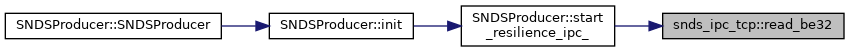
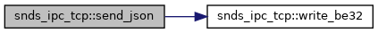

|
SeEDS
|
Functions | |
| void | write_be32 (uint32_t v, char out[4]) |
| Write a 32-bit unsigned integer into a 4-byte buffer in big-endian order. More... | |
| uint32_t | read_be32 (const char in[4]) |
| Read a 32-bit unsigned integer from a 4-byte buffer in big-endian order. More... | |
| template<class SyncWriteStream > | |
| void | send_json (SyncWriteStream &s, const nlohmann::json &j) |
| Serialize JSON into a length-prefixed frame and send it over a Boost.Asio stream. More... | |
|
inline |
Read a 32-bit unsigned integer from a 4-byte buffer in big-endian order.
| in | A 4-byte buffer containing the encoded integer. |
Example: bytes {0x12, 0x34, 0x56, 0x78} → value 0x12345678.

|
inline |
Serialize JSON into a length-prefixed frame and send it over a Boost.Asio stream.
This function first serializes the JSON object into a compact string using dump(), then prefixes it with a 4-byte big-endian length header, and finally writes both buffers to the provided synchronous stream (e.g. boost::asio::ip::tcp::socket).
| SyncWriteStream | A synchronous write-capable stream (e.g. TCP socket). |
| s | The stream object to write to. |
| j | The JSON object to serialize and send. |
Usage example: boost::asio::ip::tcp::socket sock(io_context); snds_ipc_tcp::send_json(sock, nlohmann::json{{"kind","patch"},{"payload",{...}}});

|
inline |
Write a 32-bit unsigned integer into a 4-byte buffer in big-endian order.
| v | The 32-bit unsigned integer value. |
| out | A 4-byte char buffer to receive the encoded bytes. |
Example: value 0x12345678 → bytes {0x12, 0x34, 0x56, 0x78}.